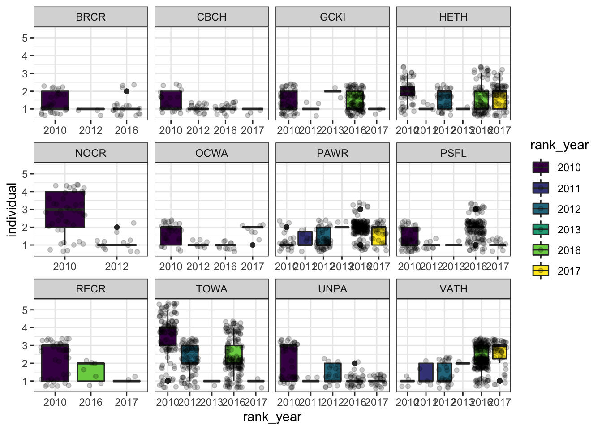
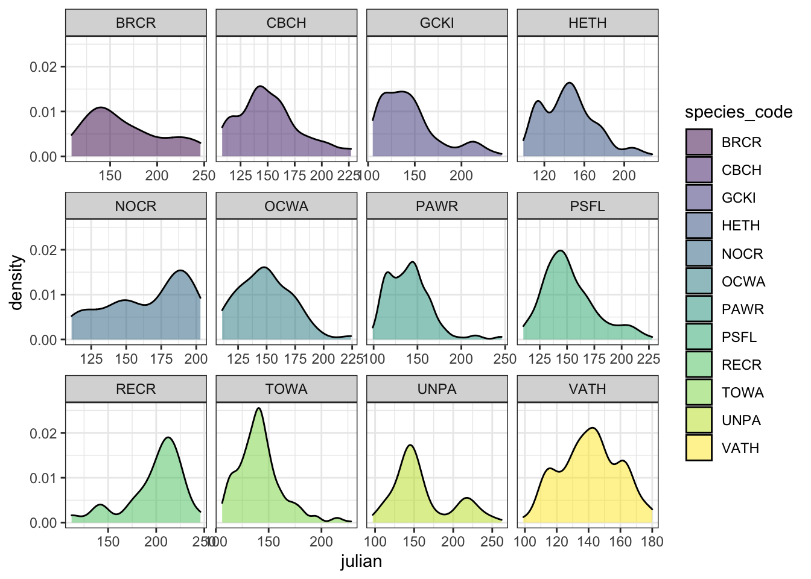
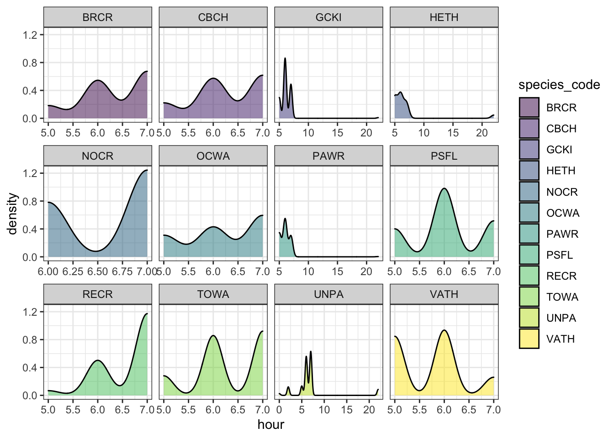

2.1 Standardizing species detections
Little is known about the songbird community on Gwaii Haanas when surveyed with ARUs.
#Sampling
g2 <- ghnp %>%
select(project_full_nm, species_code, species_english_name, individual, location_name, location_latitude, location_longitude, recording_date, abundance_type, confidence_type, user_name) %>%
distinct() %>%
group_by(species_code) %>%
add_tally(name = "count_by_species_code") %>%
ungroup() %>%
group_by(project_full_nm, species_code, individual, abundance_type, location_name, recording_date) %>%
add_tally(name = "count_by_location_date") %>%
ungroup() %>%
group_by(project_full_nm, species_code, individual, location_name, abundance_type) %>%
add_tally(name = "count_by_location") %>%
ungroup() %>%
filter(!grepl('GHNP-1',location_name),
!species_code %in% abiotic_codes,
!grepl('UN*',species_code)) %>%
mutate(julian = yday(recording_date)) %>%
group_by(project_full_nm, location_name, species_code, julian) %>%
add_tally(name = "rich") %>%
ungroup() %>%
mutate(year = lubridate::year(recording_date),
hour = lubridate::hour(recording_date))
ggplot(g2, aes(x=hour, fill=species_code)) + geom_density() + facet_wrap(~species_code, scales="free_y") + scale_fill_viridis_d() + theme_bw()
library(plotly)
htmlwidgets::saveWidget(ggplotly(ggplot(g2, aes(x=julian, fill=species_code)) + geom_density(alpha = 0.3) + scale_fill_viridis_d() + theme_bw()),"/users/alexandremacphail/desktop/gh.html")
ggplot(g2, aes(x=year, fill=species_code)) + geom_density() + facet_wrap(~species_code, scales="free_y") + scale_fill_viridis_d() + theme_bw()
normalit<-function(m){
(m - min(m))/(max(m)-min(m))
}
g2a <- g2 %>% filter(julian %in% c(100:200)) %>% group_by(species_code, julian) %>% tally() %>% mutate_each(funs(normalit), n) %>% ungroup() %>% filter(species_code %in% c("TOWA","GCKI","BRCR"))
ggplot(g2a, aes(x=julian, y=n)) + geom_density_2d_filled(alpha = 0.8) + geom_point()
# library(tidyverse)
#
# ei17 <- read_csv("EI17.csv")
#
# e2 <-ei17 %>%
# mutate(fp = str_remove(file_path,"\\_d"),
# year = lubridate::year(recording_date_time),
# hour = lubridate::hour(recording_date_time))
#
# ggplot(e2, aes(x=location, y=recording_date_time)) + geom_point() + coord_flip()
#
# ggplot(e2, aes(x=recording_date_time, y=hour, color=location)) + geom_point() + geom_jitter() + coord_flip()
#
# e3 <- e2 %>%
# group_by(location, hour) %>%
# slice_sample(n = 4) %>%
# ungroup() %>%
# arrange(location, recording_date_time)
#
# ggplot(e3, aes(x=location, y=recording_date_time)) + geom_point() + coord_flip()
#
# ggplot(e3, aes(x=recording_date_time, y=hour, color=location)) + geom_point() + geom_jitter() + coord_flip()
#
# n4 <- n2 %>%
# filter(julian %in% c(60:220),
# hour %in% c(3:10,19:22)) %>%
# group_by(location, time_index) %>%
# slice_sample(n = 8, replace = F)
#
# ggplot(n4, aes(x=location, y=recording_date_time)) + geom_point() + coord_flip()
#
# ggplot(n4, aes(x=recording_date_time, y=hour, color=location)) + geom_point() + coord_flip()
#
# ei17_tasks <- e3 %>%
# mutate(fp = paste0(tools::file_path_sans_ext(file_path),"_s",".",file_type),
# script = paste0("sudo ln -s ",fp," /media/BUdata01/wildtrax_loads/nswo_ghnpr/",file_name,".",file_type)) %>%
# select(script)
#
# write.csv(ei17_tasks$script, "ei17.txt", row.names=F, quote = F)
#
# sum(nswo_data$length_seconds)/3600